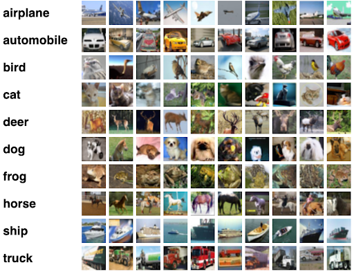

Project Summary
This study explores the classification of images for the CIFAR-10 dataset with 10 classes (50,000 training and 10,000 test images). We compare three approaches: a Convolutional Neural Network (CNN), ResNet-18 with a Support Vector Machine (SVM) classifier, and ResNet-34. The study’s goal is to assess these models’ classification accuracy, training efficiency, and generalization ability. The CNN model achieved 75% accuracy, ResNet-18 + SVM achieved 85%, and ResNet-34 reached 95%. This helps further in constructing robust image recognition models.
Dataset Overview
CIFAR-10 is an established multi-class computer-vision dataset used for object recognition. It consists of 60,000 32x32 color images in 10 classes, with 6,000 images per class. The dataset includes 50,000 training images and 10,000 test images. The dataset contains 10 mutually exclusive classes: Airplane, Automobile, Bird, Cat, Deer, Dog, Frog, Horse, Ship, and Truck. These images were collected using search engines such as Google and Flickr.
Methodology
- Data Preprocessing: The images were resized to 32x32 pixels. Transformations such as random rotations, horizontal flips, color jittering, sharpness adjustments, and random erasing were applied to the training data to improve model generalization.
- Model Architecture: Three models were tested:
- CNN: A simple convolutional neural network with two convolutional layers and one fully connected layer.
- ResNet-18 + SVM: ResNet-18 was used for feature extraction, and SVM was applied for classification with an RBF kernel.
- ResNet-34: A deeper version of ResNet designed to mitigate vanishing gradients and improve model performance on deeper architectures.
- Evaluation Metrics: Accuracy, precision, recall, F1 score, and confusion matrix were used to evaluate the performance of the models.
Results
The models were evaluated using the following metrics:
| Model | Accuracy | Precision | Recall | F1-Score |
|---|---|---|---|---|
| CNN | 75% | 72% | 73% | 72.5% |
| ResNet-18 + SVM | 86% | 83% | 84% | 83.5% |
| ResNet-34 | 95% | 94% | 95% | 94.5% |
The ResNet-34 model achieved the highest accuracy of 95%, demonstrating the benefits of deeper networks in mitigating vanishing gradients and enhancing classification performance. ResNet-18 with SVM also showed substantial improvement over the baseline CNN, achieving 85% accuracy.
Conclusion
This study shows that deeper networks like ResNet-34 significantly improve classification accuracy on the CIFAR-10 dataset. While CNN and ResNet-18 with SVM provide strong results, ResNet-34 demonstrates the highest performance due to its ability to address the vanishing gradient problem and better handle deep architectures. Future work could explore more complex datasets, and incorporate advanced architectures like Vision Transformers for even better performance.
Code and Resources
Access the code and additional resources for this project on Google Colab: Google Colab Project